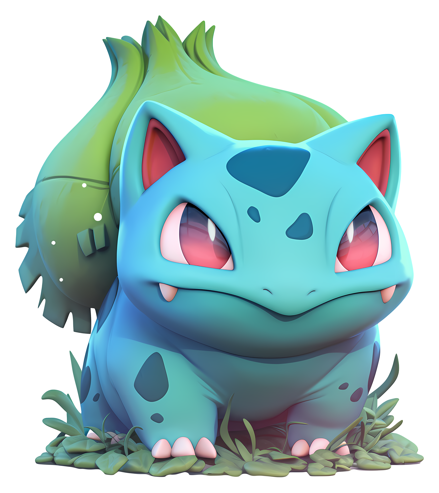

Bulbasaur is a Grass-type Pokémon native to the Kanto region, measuring about 70 centimeters and weighing an average of 6.9 kilograms. This small, four-legged reptile is distinguished by the plant bulb it has carried on its back since birth.
This bulb gradually grows larger through photosynthesis and will eventually bloom into a large flower as Bulbasaur evolves. Known for its calm nature and sturdiness, it makes an excellent starter Pokémon for beginner trainers.